Cargando...
Aquí encontrarás las empresas mas relevante para este departamento.
Super Selectos

Super Selectos es una cadena de supermercados salvadoreña perteneciente al Grupo Calleja. Cuenta con múltiples sucursales en todo El Salvador y ofrece una amplia variedad de productos, incluyendo alimentos preparados, panadería y categorías gourmet.
Teléfono: 2222 3011
Horario de apertura: Generalmente de 8:00 a.m. a 10:00 p.m., aunque puede variar.
Sucursales:
Super Selectos Masferrer
Dirección: Prolongación 59 Avenida Sur y calle El Progreso 2934, San Salvador
Teléfono: 2267-6767
Super Selectos Multiplaza San Salvador
Dirección: Primer Nivel, Ancla 3, Multiplaza San Salvador
Teléfono: 2267-6767
Super Selectos Barrio San Miguelito
Dirección: 29 Calle Poniente y 5a Avenida Norte, Barrio San Miguelito, San Salvador
Super Selectos Paseo General Escalón
Dirección: Paseo General Escalón y 79 Avenida Sur, San Salvador
Teléfono: 2213-6334
Super Selectos Estadio Santa Lucía
Dirección: Cerca de la instalación deportiva Estadio Santa Lucía, San Salvador
Coscafé
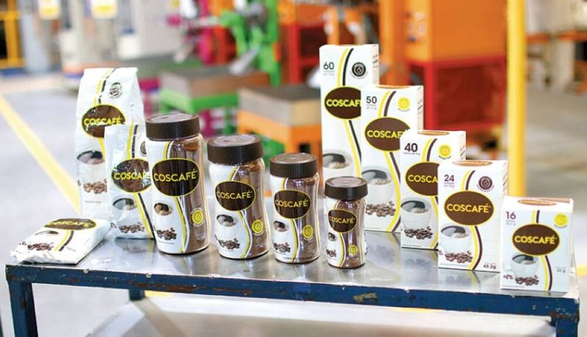Coscafé es una marca de café muy popular en El Salvador, producida por la empresa Planta de Torrefacción de Café, S.A. (Plantosa). Esta marca ofrece una variedad de productos de café, incluyendo café tostado e instantáneo, elaborados con granos de café arábica de alta calidad.
Productos y Servicios:
- Café Tostado e Instantáneo: Coscafé ofrece diferentes presentaciones de café, tanto en grano como molido, así como café instantáneo.
- Calidad: La producción de Coscafé se realiza bajo estrictos controles de calidad para asegurar un excelente sabor y aroma en cada taza.
Historia y Reconocimiento:
- Fundación: Plantosa, la empresa detrás de Coscafé, tiene más de 25 años de experiencia en la industria del café.
- Popularidad: Coscafé es una de las marcas de café más consumidas en El Salvador, conocida por su sabor y calidad consistentes.
Ubicaciones y Contacto:
Casa Coscafé Soyapango
Dirección: Soyapango, San Salvador
Teléfono: No disponible
Sucursales:
Sucursal Soyapango
Dirección: Plaza Mundo, Soyapango, San Salvador
Galvaniza
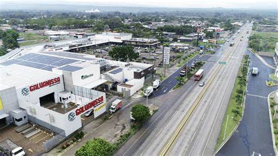Galvaniza es una empresa especializada en la galvanización de acero, ofreciendo soluciones para techos, estructuras metálicas y más.
Sucursales:
Galvaniza Autopista Sur
Dirección: Boulevard de Los Proceres, Autopista Sur, San Salvador
Teléfono: 2212 7702
Galvaniza San Miguelito
Dirección: Av. Oscar Arnulfo Romero y 17 calle Oriente, Barrio San Miguelito, San Salvador
Teléfono: 2281-0444
Galvaniza Venezuela
Dirección: 29 Av. Sur y Antigua Calle del Ferrocarril, Colonia Cucumacayán, San Salvador
Teléfono: 2222-1155
Almacenes Vidrí
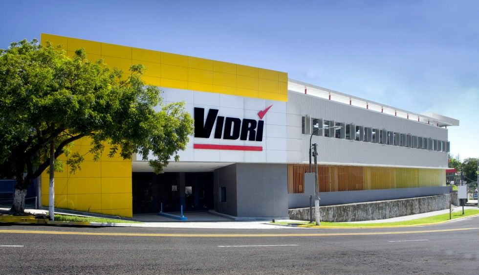Almacenes Vidrí es una reconocida ferretería en El Salvador, fundada en 1917. Actualmente, cuenta con 16 sucursales distribuidas en la zona Metropolitana de San Salvador, así como en las zonas Paracentral, Occidental y Oriental del país.
Teléfono: +503 2271 4033
Horario de apertura: Lunes a sábado: 8:00 a.m. a 5:00 p.m.; Domingo: 9:00 a.m. a 5:00 p.m.
Sucursales:
Sucursal Venezuela
Dirección: 21 Avenida Sur entre 12 y 14 Calle Poniente, San Salvador
Teléfono: +503 2271 4033
Sucursal Escalón
Dirección: Paseo General Escalón, San Salvador
Teléfono: +503 2264 4444
Sucursal Soyapango
Dirección: Carretera de Oro, Soyapango
Teléfono: +503 2259 5555
Ferretería Freund
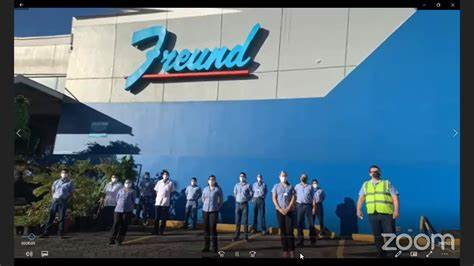Freund es una empresa salvadoreña fundada en 1913, dedicada al comercio detallista y mayorista de productos de ferretería, herramientas, pinturas, decoración, hogar, jardinería, materiales de construcción, eléctricos, iluminación, fontanería y herrajes.
Servicios y Productos:
- Ferretería y Herramientas: Amplia gama de herramientas manuales y eléctricas.
- Materiales de Construcción: Todo lo necesario para proyectos de construcción.
- Pinturas y Decoración: Variedad de pinturas y artículos decorativos.
- Jardinería: Productos para el cuidado y mantenimiento de jardines.
- Electrodomésticos y Hogar: Artículos para el hogar y electrodomésticos.
Servicios Adicionales:
- Compras en línea: Con opciones de envío a domicilio y retiro en tienda.
- Atención al cliente: A través de chat en línea y redes sociales.
Sucursales:
Sucursal Escalón
Dirección: 79 Av. Sur y Calle Juan José Cañas, Colonia Escalón, San Salvador
Teléfono: +503 2263 6666
Sucursal Soyapango
Dirección: Carretera de Oro, Soyapango
Teléfono: +503 2271 4444
Tigo
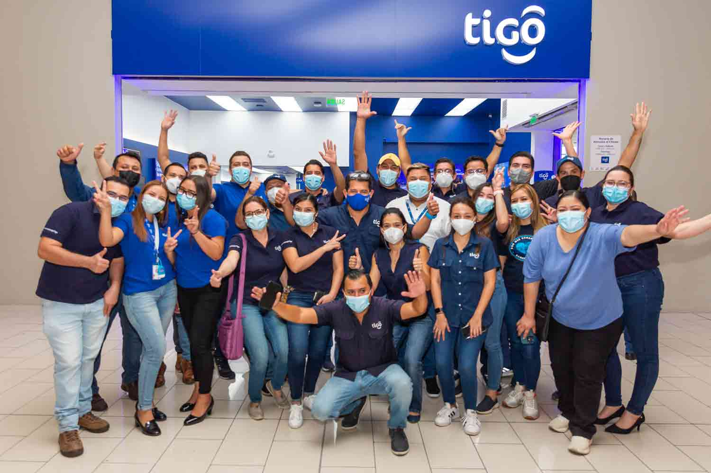Tigo es una empresa de telecomunicaciones que opera bajo la marca comercial de Millicom y comenzó sus operaciones en El Salvador en 1992. Los servicios ofrecidos incluyen telefonía móvil, internet de alta velocidad, televisión por cable y servicios financieros móviles.
Sucursales:
Tigo Metrocentro
Dirección: Centro Comercial Metrocentro, San Salvador
Teléfono: 2205 5555
Tigo Galerías
Dirección: Centro Comercial Galerías, San Salvador
Teléfono: 2205 5555
Tigo La Gran Vía
Dirección: Centro Comercial La Gran Vía, San Salvador
Teléfono: 2205 5555
Tigo Multiplaza
Dirección: Centro Comercial Multiplaza, San Salvador
Teléfono: 2205 5555
Tigo Plaza Mundo
Dirección: Centro Comercial Plaza Mundo, San Salvador
Teléfono: 2205 5555
Claro
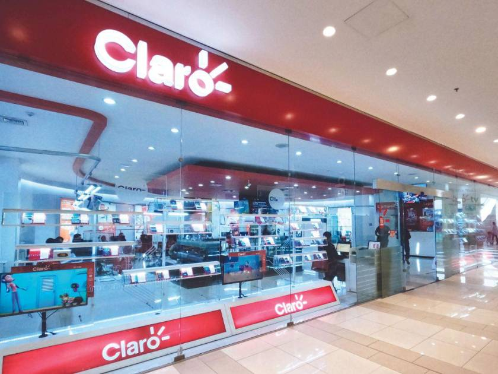Claro es una empresa de telecomunicaciones que forma parte del grupo mexicano América Móvil, propiedad del empresario Carlos Slim. Claro ofrece una amplia gama de servicios en varios países de América Latina, incluyendo El Salvador.
Servicios de Claro:
- Telefonía móvil: Planes de voz y datos para teléfonos móviles.
- Telefonía fija: Servicios de línea fija para hogares y empresas.
- Internet: Conexiones de banda ancha tanto fijas como móviles.
- Televisión por cable: Servicios de televisión por suscripción con una variedad de canales.
- Servicios corporativos: Soluciones de comunicación y tecnología para empresas.
Sucursales en San Salvador:
Sucursal Metrocentro
Dirección: Centro Comercial Metrocentro, San Salvador
Teléfono: 2250 5555
Sucursal Multiplaza
Dirección: Centro Comercial Multiplaza, San Salvador
Teléfono: 2250 5555
Sucursal Escalón
Dirección: Paseo General Escalón, San Salvador
Teléfono: 2250 5555
Nestlé
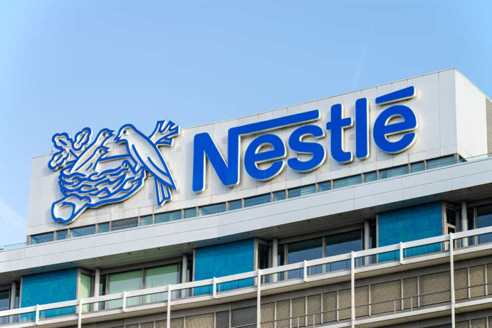Nestlé es una multinacional suiza con una fuerte presencia en El Salvador. Ha invertido en expansión e infraestructura en el país, incluyendo un nuevo centro de distribución que convierte a El Salvador en un hub logístico regional.
Inversiones y Expansión
- Centro de Distribución: Nestlé ha inaugurado un nuevo centro de distribución en El Salvador, con una inversión de más de $10 millones.
- Sostenibilidad: Nestlé implementa programas de recuperación y reciclaje de plásticos, recuperando 649 toneladas de plástico en un año.
Productos y Servicios
- Alimentos y Bebidas: Ofrece una variedad de productos, como café, lácteos, cereales y alimentos para bebés.
- Innovación y Calidad: Compromiso con mejorar la calidad de vida a través de la alimentación, enfocándose en sostenibilidad e innovación.
Impacto Económico
Nestlé contribuye significativamente al crecimiento económico en El Salvador, generando empleo y desarrollo en la región.
Sucursales:
Centro de Distribución Nejapa
Dirección: Zona Industrial de Nejapa, San Salvador
Oficinas Centrales
Dirección: Edificio Zafiro, Avenida El Boquerón, Urbanización Madre Selva, Antiguo Cuscatlán, San Salvador
Nestlé El Salvador S.A.
Dirección: Carretera a Sonsonate, Km 29 1/2, Cantón El Capulín, San Salvador
Farmacia San Nicolás
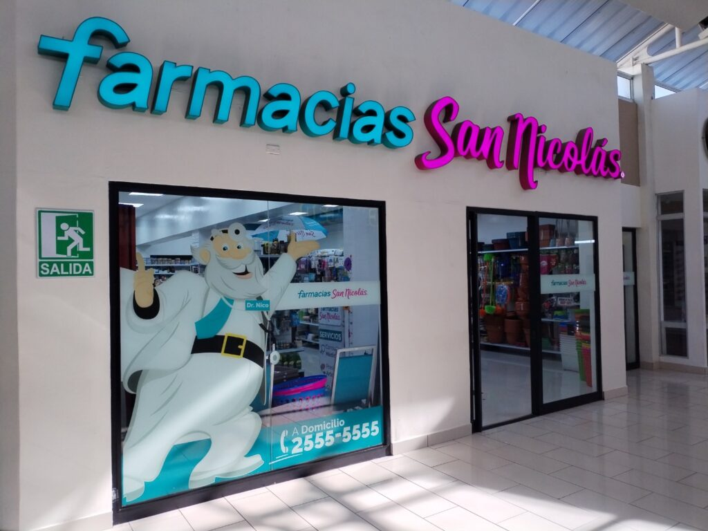Farmacias San Nicolás es una cadena de farmacias muy conocida en El Salvador, ofreciendo una amplia gama de productos y servicios.
Servicios
- Medicamentos: Amplia variedad de medicamentos de prescripción y de venta libre.
- Dermocosmética: Productos para el cuidado de la piel.
- Conveniencia: Artículos de uso diario y productos de salud y bienestar.
- Telemedicina: Consultas médicas en línea.
Horarios de Atención
Lunes a domingo: 8:00 a.m. a 8:00 p.m.
Ubicaciones de Sucursales en San Salvador:
Sucursal 25 Av. Norte
Dirección: 25 Av. Norte, No. 712, Colonia Médica, San Salvador
Sucursal 29 Calle Poniente
Dirección: 29 Calle Poniente, No. 216, 1a Avenida Norte, San Salvador
Sucursal 75 Avenida Norte
Dirección: Prolongación Alameda Juan Pablo II y 75 Av. Norte, Centro Comercial Escalón II, Local 1-1 & 1-2, San Salvador
Sucursal Metrocentro
Dirección: Metrocentro, San Salvador
Sucursal Plaza Mundo
Dirección: Centro Comercial Plaza Mundo, 2do nivel, Local #24, Soyapango
Agua Cristal

Agua Cristal es una marca líder de agua embotellada en El Salvador, conocida por su pureza y calidad.
Historia y Calidad
- Trayectoria: Agua Cristal tiene más de 60 años en el mercado salvadoreño, ganándose la confianza de los consumidores.
- Proceso de Purificación: Utiliza un proceso exclusivo llamado Hydropure, que asegura la pureza del agua desde el inicio hasta la última gota.
- Certificaciones: Cuenta con certificaciones locales e internacionales, incluyendo la Water Quality Association y la NSF International.
Productos
- Presentaciones: Ofrecen una variedad de presentaciones, desde botellas personales hasta garrafones de 5 galones.
- Precios: El precio del garrafón de agua Cristal es de aproximadamente $2.85 USD, si ya tienes el garrafón vacío.
Servicios
Entrega a Domicilio: Agua Cristal ofrece servicio de entrega a domicilio para mayor comodidad.
Ubicaciones de Oficinas
Centro de Distribución Nejapa
Dirección: Zona Industrial de Nejapa, San Salvador
Oficinas Centrales
Dirección: Avenida Independencia, #526, San Salvador
Coca-Cola

Coca-Cola es una de las marcas de bebidas más reconocidas y consumidas en el mundo, y en El Salvador no es la excepción.
Historia y Presencia
- Historia: Coca-Cola se disfruta en El Salvador desde 1940, gracias a la Embotelladora Salvadoreña, ahora conocida como La Constancia AB-InBev.
- Productos: Ofrecen una variedad de productos, incluyendo Coca-Cola Sabor Original, Coca-Cola Sin Azúcar y Coca-Cola Sabor Ligero.
Servicios y Productos
- Bebidas: Además de las diferentes variantes de Coca-Cola, también ofrecen otras bebidas como Fanta, Sprite y jugos.
- Sostenibilidad: Coca-Cola está comprometida con la sostenibilidad y ha implementado programas para reducir su impacto ambiental.
Precios
- Botella de 2 litros: Aproximadamente $2.15 USD.
- Lata de 355 ml: Aproximadamente $0.60 USD.
Ubicaciones de Oficinas
Oficinas Centrales
Dirección: Avenida Independencia, #526, San Salvador
Centro de Distribución Nejapa
Dirección: Cerca de la lotificación Las Tres Américas, Nejapa, San Salvador
La Casa del Repuesto (LCR)
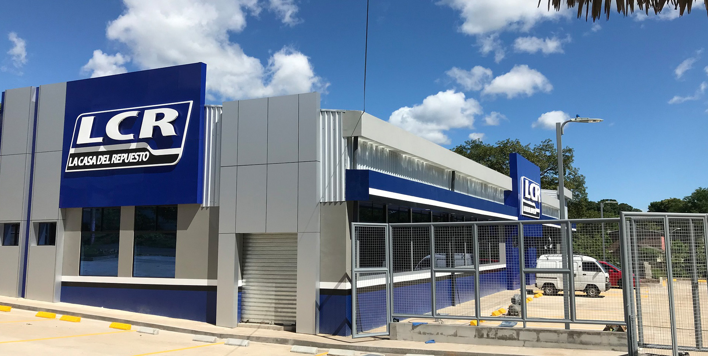La Casa del Repuesto es una empresa dedicada a la venta de repuestos automotrices y productos industriales en El Salvador.
Servicios
- Repuestos Automotrices: Amplia variedad de repuestos para diferentes marcas y modelos de vehículos.
- Productos Industriales: Herramientas y equipos para uso industrial.
- Centros de Servicio: Asesoría técnica especializada y diagnóstico profesional para el mantenimiento de vehículos.
Horarios de Atención
- Lunes a viernes: 8:00 a.m. a 5:00 p.m.
- Sábados: 8:00 a.m. a 12:00 p.m.
Ubicaciones de Sucursales en San Salvador
Casa Matriz
Dirección: Calle 5 de Noviembre, San Salvador
Teléfono: +503 2233 8080
Sucursal Constitución
Dirección: Boulevard Constitución, San Salvador
Sucursal 29 Calle Poniente
Dirección: 29 Calle Poniente, San Salvador
Sucursal Venezuela
Dirección: Avenida Venezuela, San Salvador
Sucursal San Marcos
Dirección: Carretera a Comalapa, San Marcos, San Salvador
Galvanissa
Galvanissa, parte del Grupo Ferromax, es una empresa líder en la fabricación y distribución de productos de hierro y techos en El Salvador. En el departamento de Usulután, Galvanissa cuenta con varias ubicaciones para atender a sus clientes.
Servicios
- Fabricación y entrega inmediata: Productos como Polín GHT y cubiertas de techos ColorAlúm y ZincAlúm a longitud exacta.
- Asesoría técnica: Personal capacitado para brindar asesoría en proyectos de construcción.
Sucursales en Usulután
Sucursal Usulután
Dirección: Km 119, Carretera del Litoral, Frente al Desvío de Santa Elena, Municipio de Santa María, Usulután
Teléfono: +503 2624-7834
Sucursal Desvío a Santiago de María
Dirección: Km 115 Carretera Litoral, frente al Desvío a Santiago de María, Usulután
Teléfono: +503 2624-9407
Sucursal Villa El Triunfo
Dirección: Km 104 Carretera Panamericana, Barrio la Cruz, 600 mts después del desvío a Santiago de María, El Triunfo, Usulután
Teléfono: +503 2663-1000
Super Selectos
Super Selectos es una de las cadenas de supermercados más grandes y populares en El Salvador. En el departamento de Usulután, cuenta con varias sucursales, incluyendo una en el centro de Usulután y otra en el nuevo centro comercial Plaza Mundo Usulután. Esta última es la sucursal número 115 de la cadena y fue inaugurada recientemente con una inversión de $4.5 millones.
Servicios
- Productos de supermercado: Alimentos, bebidas, productos de limpieza, artículos para el hogar, entre otros.
- Ofertas y promociones: Super Selectos ofrece regularmente descuentos y promociones especiales en una variedad de productos.
- Compras en línea: Puedes realizar tus compras a través de su sitio web y optar por entrega a domicilio o retiro en tienda.
Ubicaciones de Sucursales en Usulután
Super Selectos Usulután Centro
Dirección: 8HV7+59F, Usulután, El Salvador
Teléfono: +503 2267 6767
Super Selectos Plaza Mundo Usulután
Dirección: Kilómetro 119 de la carretera Litoral, Cantón Ojo de Agua, Usulután
Teléfono: +503 2267 6767
Descripción: Esta sucursal es la número 115 de la cadena y está ubicada en el recién inaugurado centro comercial Plaza Mundo Usulután. La inversión para esta sucursal fue de $4.5 millones y ha generado 100 empleos directos y 400 indirectos.
Campos Escobar S.A de C.V

Campos Escobar S.A de C.V es una empresa ubicada en Usulután, El Salvador. Se especializa en la venta de repuestos y suministros para automóviles.
Detalles de la Empresa
- Dirección: Km 112 Carretera El Litoral, Salida a San Miguel, Usulután, Usulután, El Salvador
- Industria: Suministros para automóviles y partes nuevas
- Nombre Comercial: Multirepuestos
- Fundación: 2012
- Empleados: Entre 50 y 100
Ubicación en el Mapa
Ferretería San Rafael
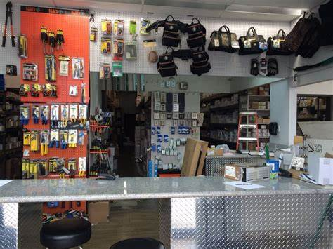Ferretería San Rafael es una tienda ubicada en Usulután, El Salvador, que se especializa en la venta de materiales de construcción y productos de ferretería.
Información Clave
- Dirección: CA-2, Usulután, Usulután, El Salvador
- Teléfono: +503 2662 1370
- Servicios: Venta de materiales de construcción, herramientas y productos de ferretería
Descripción
Ferretería San Rafael es conocida por ser una opción confiable para la compra de materiales de construcción y productos de ferretería en la región. Ofrecen una amplia gama de productos para satisfacer las necesidades de sus clientes.
Ubicación en el Mapa
Funerales La Resurrección
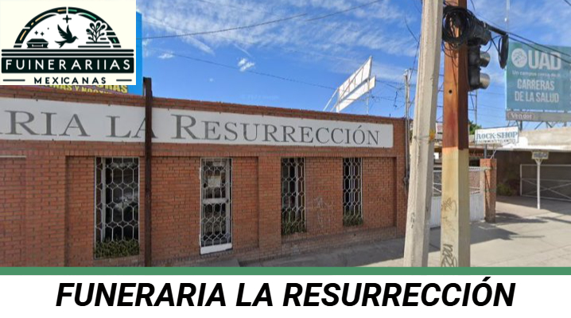Funerales La Resurrección es una empresa en Usulután, El Salvador, que ofrece servicios funerarios completos.
Información Clave
- Dirección: 3ra. Av. Norte y 6a. Calle Poniente No. 14, Barrio La Merced, Usulután, El Salvador
- Teléfono: +503 2662 3096
- Servicios: Capillas de velación y servicios funerarios completos
Ubicación en el Mapa
Walmart
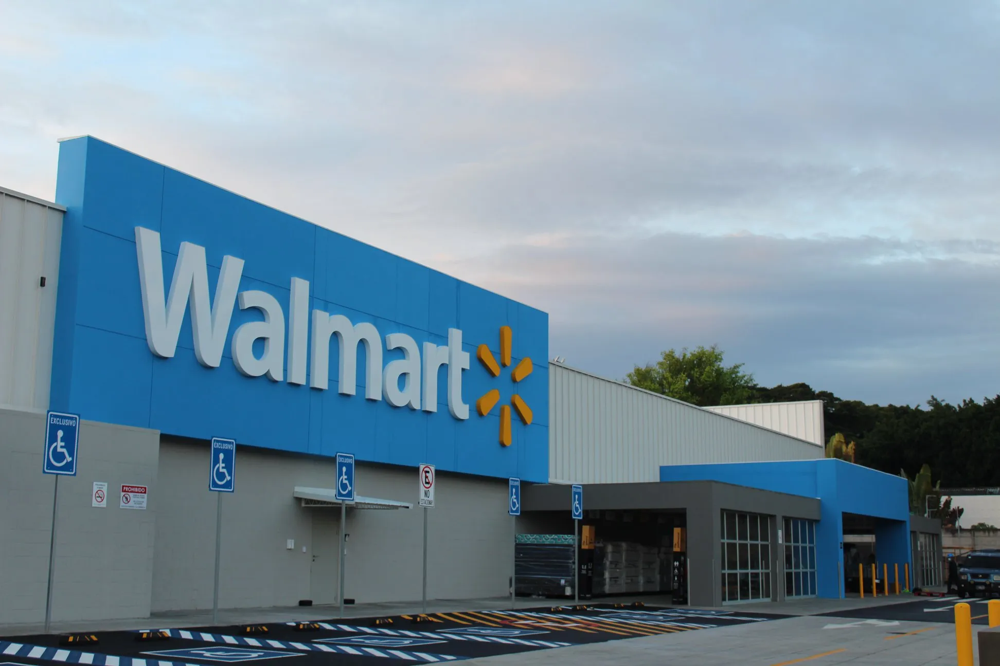Walmart es una corporación multinacional de origen estadounidense, fundada por Sam Walton en 1962. Se dedica principalmente a la venta de una amplia variedad de productos a precios bajos, incluyendo comestibles, ropa, electrónicos, artículos para el hogar, y más.
Principales Actividades
- Venta al por menor: Walmart opera grandes almacenes de descuento y clubes de almacenes.
- Venta al por mayor: A través de Sam’s Club, ofrece productos en grandes cantidades a precios reducidos.
- Servicios Financieros: Incluye transferencias de dinero, pago de facturas, y otros servicios financieros.
Misión y Visión
- Misión: Ser la mejor tienda detallista en beneficio de sus clientes, ofreciendo productos de calidad a precios bajos.
- Visión: Mantener siempre un amplio catálogo de productos y servicios, asegurando la satisfacción del cliente.
Sucursal en Santa Ana
- Dirección: Prolongación Avenida Independencia, Boulevard Los 44, Cantón Loma Alta, Santa Ana
- Horario: Abierto todos los días de 7:00 a.m. a 10:00 p.m.
Servicios Ofrecidos
- Abarrotes y Productos de Consumo Diario
- Electrónica y Electrodomésticos
- Ropa y Accesorios
- Farmacia
- Centro de Jardinería
- Servicios Financieros
Ubicación en el Mapa
Maxi Despensa
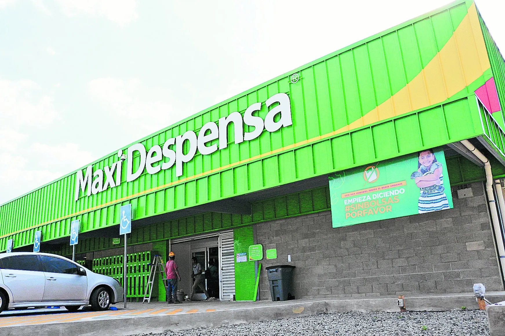Maxi Despensa es una cadena de supermercados que forma parte del grupo Walmart. Se dedica a ofrecer una amplia gama de productos a precios bajos, en un espacio amplio y cómodo.
Principales Actividades
- Venta de Abarrotes: Productos de consumo diario como alimentos, bebidas, y productos de limpieza.
- Electrónica y Electrodomésticos: Artículos como televisores, refrigeradores, y otros electrodomésticos.
- Ropa y Accesorios: Prendas de vestir para toda la familia.
- Línea Blanca: Productos como lavadoras, secadoras, y estufas.
- Productos de Cuidado Personal y del Hogar: Artículos de higiene personal y productos para el mantenimiento del hogar.
Horario
- Lunes a Jueves: 8:00 a.m. - 8:00 p.m.
- Viernes: 8:00 a.m. - 7:00 p.m.
- Sábado y Domingo: 8:00 a.m. - 7:00 p.m.
Sucursales de Maxi Despensa en Santa Ana
Maxi Despensa Santa Ana
- Dirección: Pje 15 De Septiembre, Santa Ana, El Salvador
- Teléfono: +503 2440 3255
- Horario:
- Lunes a Jueves: 8:00 a.m. - 8:00 p.m.
- Viernes: 8:00 a.m. - 7:00 p.m.
- Sábado y Domingo: 8:00 a.m. - 7:00 p.m.
Ubicación en el Mapa - Maxi Despensa Santa Ana
Maxi Despensa San Juan
- Dirección: Av Independencia Sur, Santa Ana, El Salvador
- Teléfono: +503 2440 3253
- Horario:
- Lunes a Jueves: 8:00 a.m. - 8:00 p.m.
- Viernes: 8:00 a.m. - 7:00 p.m.
- Sábado y Domingo: 8:00 a.m. - 7:00 p.m.
Ubicación en el Mapa - Maxi Despensa San Juan
Súper Selectos
Súper Selectos es una cadena de supermercados muy conocida en El Salvador, y tiene varias sucursales en el departamento de Santa Ana.
Sucursales de Súper Selectos en Santa Ana
Súper Selectos Metrocentro Santa Ana
- Dirección: Colonia Loma Linda, final avenida Independencia Sur y by pass, Santa Ana, El Salvador
- Teléfono: +503 2504 5555
- Horario:
- Lunes a Sábado: 9:00 a.m. - 7:00 p.m.
- Domingo: 9:00 a.m. - 7:00 p.m.
Ubicación en el Mapa - Súper Selectos Metrocentro Santa Ana
Súper Selectos Candelaria de La Frontera
- Dirección: Candelaria de La Frontera, Santa Ana, El Salvador
- Teléfono: +503 2267 6767
- Horario:
- Lunes a Sábado: 9:00 a.m. - 7:00 p.m.
- Domingo: 9:00 a.m. - 7:00 p.m.
Ubicación en el Mapa - Súper Selectos Candelaria de La Frontera
Servicios Ofrecidos
- Abarrotes y Productos de Consumo Diario
- Electrónica y Electrodomésticos
- Ropa y Accesorios
- Productos de Limpieza y Cuidado Personal
- Panadería y Pastelería
- Carnicería y Pescadería
Textiles de Exportación S.A.
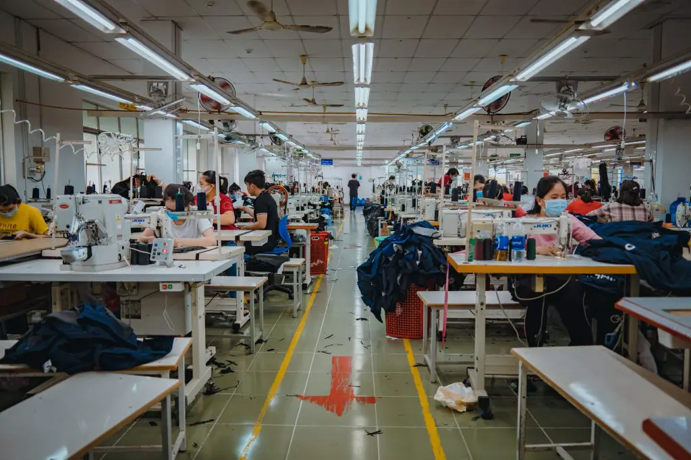Textiles de Exportación S.A. es una empresa ubicada en Santa Ana, El Salvador, que se dedica a la fabricación y exportación de productos textiles.
Información Clave
- Industria: Textil y confección
- Productos: Principalmente camisetas, suéteres, y otros artículos de ropa
- Exportaciones: Contribuye significativamente a las exportaciones de textiles de El Salvador
Descripción
La empresa forma parte de un sector vital para la economía salvadoreña, representando una parte importante de las exportaciones del país. El sector textil y de confección en El Salvador es conocido por su alta calidad y competitividad en el mercado internacional.
Horarios
- Lunes a Viernes: 10:00 - 14:00 / 16:30 - 20:00
- Sábado: 10:30 - 14:15
Sucursales
Tienda Detalle
- Dirección: Moles, 22, 08002 Barcelona
- Teléfono: 933 015 175
- WhatsApp: 696 857 604
Almacén y Tienda Mayor
- Dirección: Av. Eduard Maristany, 392-394, 08918 Badalona
- Teléfono: 933 020 948
- WhatsApp: 630 012 499
Ubicación en el Mapa - Textiles de Exportación S.A.
La Casa del Repuesto
La Casa del Repuesto en Santa Ana se especializa en la venta de repuestos y accesorios para vehículos. Ofrecen una amplia gama de productos, incluyendo frenos, motores, sistemas eléctricos, herramientas, suspensión y embrague.
Información de Contacto
- Dirección: Calle Aldea San Antonio, Final 25 Calle Pte, Bo San Antonio, contiguo a Pasadena, Santa Ana, El Salvador
- Teléfono: 2440 1251
- Correo Electrónico: ventas@lcrelsalvador.com
- Sitio Web: lcrelsalvador.com
Horarios de Atención
- Lunes a Viernes: 8:00 AM - 5:00 PM
- Sábado: 8:00 AM - 12:00 PM
Ubicación de Locales
- Dirección: Calle Aldea San Antonio, Final 25 Calle Pte, Bo San Antonio, contiguo a Pasadena, Santa Ana, El Salvador
- Teléfono: 2440 1251
- Correo Electrónico: ventas@lcrelsalvador.com
- Sitio Web: lcrelsalvador.com
Ubicación en el Mapa - La Casa del Repuesto
Industria de la Confección Americana Salvadoreña S.A. de C.V. (INCAS)
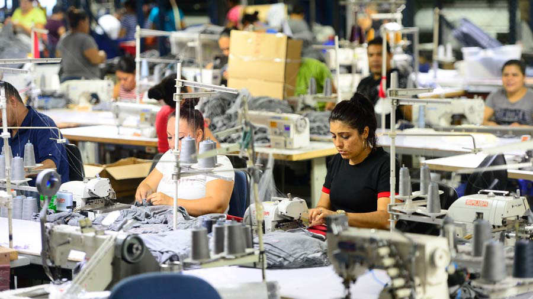INCAS se especializa en la fabricación de telas y productos textiles, especialmente tejidos de algodón. La empresa se dedica a la producción de telas para camisas y otros productos textiles, formando parte del sector de los molinos de telas y textiles.
Servicios
- Fabricación de Telas: Producción de tejidos de algodón y otros materiales.
- Producción Textil: Confección de productos textiles variados.
Información de Contacto
- Dirección: Km. 69 Carretera a Metapán, Santa Ana, El Salvador
- Teléfono: No disponible públicamente
Ubicación en el Mapa - INCAS
Claro
Claro es una de las principales empresas de telecomunicaciones en El Salvador, ofreciendo una amplia gama de servicios que incluyen telefonía móvil, internet, televisión por cable y servicios empresariales.
Servicios
- Telefonía Móvil: Planes pospago y prepago, con cobertura nacional e internacional.
- Internet: Servicios de internet residencial y móvil, con opciones de alta velocidad.
- Televisión por Cable: Paquetes de TV con canales nacionales e internacionales, incluyendo opciones de HD.
- Servicios Empresariales: Soluciones de telecomunicaciones para negocios, como internet dedicado, telefonía IP y servicios en la nube.
Horarios de Atención
- Lunes a Viernes: 8:00 a.m. a 5:00 p.m.
- Sábados: 8:00 a.m. a 12:00 p.m.
- Domingos: Cerrado
Ubicaciones de Sucursales en Santa Ana
Sucursal Principal
Dirección: 2ª Calle Oriente y 2ª Avenida Sur, Barrio Santa Cruz, Santa Ana
Teléfono: +503 2250 5555
Sucursal Calle Libertad Oriente
Dirección: Calle Libertad Oriente y 5ª Avenida Norte, Santa Ana
Centro de Atención al Cliente (CAC) Las Ramblas
Dirección: Centro Comercial Las Ramblas, entre carretera Panamericana y carretera hacia Chalchuapa, frente al redondel Santa María, locales 4 y 5, contiguo a Food Court
Tigo
Tigo es una de las principales empresas de telecomunicaciones en El Salvador, ofreciendo una variedad de servicios que incluyen telefonía móvil, internet, televisión por cable y servicios empresariales.
Servicios
- Telefonía Móvil: Planes pospago y prepago, con cobertura nacional e internacional.
- Internet: Servicios de internet residencial y móvil, con opciones de alta velocidad.
- Televisión por Cable: Paquetes de TV con canales nacionales e internacionales, incluyendo opciones de HD.
- Servicios Empresariales: Soluciones de telecomunicaciones para negocios, como internet dedicado, telefonía IP y servicios en la nube.
Horarios de Atención
- Metrocentro Santa Ana: Lunes a Sábado: 9:00 AM - 6:00 PM; Domingo: 10:00 AM - 4:00 PM
- Santa Ana Centro: Lunes a Viernes: 8:00 AM - 5:00 PM; Sábado: 9:00 AM - 1:00 PM
Ubicaciones de Sucursales en Santa Ana
Sucursal Metrocentro Santa Ana
Dirección: Centro Comercial Metrocentro Santa Ana, Nivel 2, Fase 2, Locales 262B-262C, Santa Ana, El Salvador
Sucursal Santa Ana Centro
Dirección: 9na Calle Poniente entre 2da y 4ta Avenida Sur, Santa Ana, El Salvador
Tigo
Tigo tiene una presencia en Chalatenango, ofreciendo servicios de telecomunicaciones como internet, telefonía móvil y televisión por cable.
Servicios Ofrecidos
- Internet: Conexiones de alta velocidad para hogares y negocios.
- Telefonía Móvil: Planes de datos y llamadas para diferentes necesidades.
- Televisión por Cable: Amplia selección de canales nacionales e internacionales.
- Recargas y Roaming: Servicios de recarga y roaming para mantenerte conectado en cualquier lugar.
Horarios de Atención
- Lunes a Viernes: 8:00 AM - 4:00 PM
- Sábados: 8:00 AM - 3:00 PM
- Domingos: Cerrado
Ubicaciones de Sucursales en Chalatenango
Sucursal Principal
Dirección: Barrio El Centro, Edificio María Julia, local #11
Sucursal Barrio Las Flores
Dirección: Calle San Martín #17, a un costado de la Alcaldía Municipal
Claro
Claro es una de las principales empresas de telecomunicaciones en El Salvador, ofreciendo una amplia gama de servicios.
Servicios Ofrecidos
- Internet: Conexiones de alta velocidad para hogares y negocios.
- Telefonía Móvil: Planes de datos y llamadas para diferentes necesidades.
- Televisión por Cable: Amplia selección de canales nacionales e internacionales.
- Telefonía Fija: Servicios de telefonía para hogares y empresas.
- Recargas y Roaming: Servicios de recarga y roaming para mantenerte conectado en cualquier lugar.
Horarios de Atención
- Lunes a Viernes: 8:00 AM - 5:00 PM
- Sábados: 8:00 AM - 4:00 PM
- Domingos: Cerrado
Ubicaciones de Sucursales en Chalatenango
Sucursal Principal
Dirección: Calle San Martín, Barrio El Centro
Sucursal La Palma
Dirección: Bo. El Centro, Calle hacia San Salvador, La Palma
Sucursal Tejutla
Dirección: Carretera Troncal Del Norte #32, Tejutla
Super Selectos
Super Selectos es una de las cadenas de supermercados más grandes y reconocidas en El Salvador. Se dedica a la venta de una amplia variedad de productos, incluyendo alimentos, bebidas, productos de limpieza, artículos para el hogar, y más. Su objetivo es ofrecer productos de calidad a precios accesibles, brindando una excelente experiencia de compra a sus clientes.
Horarios de Atención
- Lunes a Domingo: 7:00 AM - 10:00 PM
Servicios Ofrecidos
- Supermercado: Venta de productos frescos, enlatados, congelados, y más.
- Panadería: Productos de panadería y repostería recién horneados.
- Carnicería: Carne fresca y de calidad.
- Frutería y Verdulería: Frutas y verduras frescas.
- Productos de Limpieza: Artículos para la limpieza del hogar.
- Artículos para el Hogar: Variedad de productos para el hogar.
Sucursal Principal en Chalatenango
Dirección: Calle Morazán, Chalatenango
CAESS (Compañía de Alumbrado Eléctrico de San Salvador)
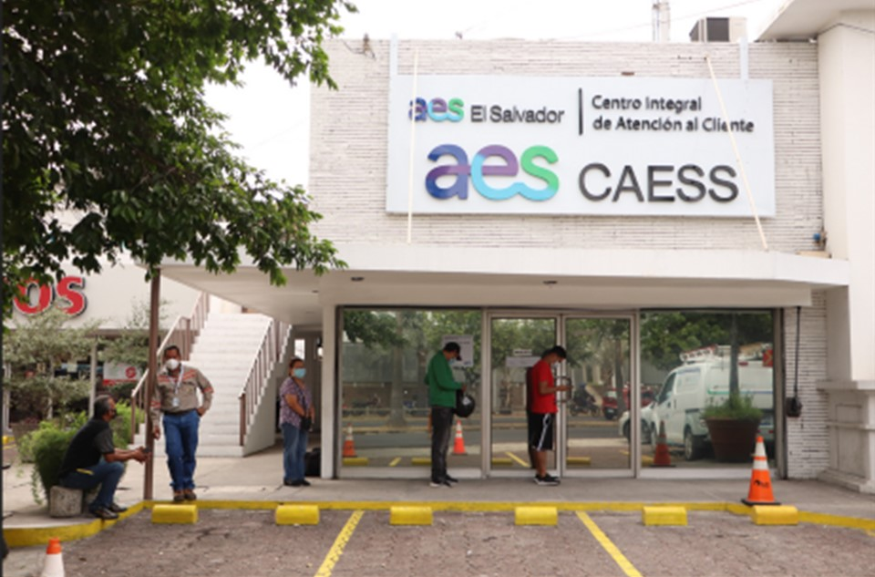CAESS es una empresa dedicada a la distribución y comercialización de energía eléctrica en El Salvador.
Horarios de Atención
- Lunes a Viernes: 8:00 AM - 5:00 PM
- Sábados: 8:00 AM - 12:00 PM
- Domingos: Cerrado
Servicios Ofrecidos
- Distribución de Energía Eléctrica: Suministro de electricidad a hogares, negocios y comunidades.
- Atención al Cliente: Trámites y consultas sobre el servicio de energía eléctrica.
- Pagos y Facturación: Opciones para realizar pagos y consultas de facturas en línea y en puntos de pago autorizados.
- Mantenimiento de la Red Eléctrica: Trabajos de inversión y mantenimiento para garantizar un suministro eléctrico seguro y confiable.
Sucursales en Chalatenango
Sucursal Principal
Dirección: Calle Morazán, Chalatenango
Horarios: Lunes a Viernes: 8:00 AM - 5:00 PM, Sábados: 8:00 AM - 12:00 PM, Domingos: Cerrado
Sucursal Tejutla
Dirección: Mall del Sol, Carretera Troncal del Norte Kilómetro 51, Tejutla
Horarios: Lunes a Viernes: 8:00 AM - 12:00 PM y 1:00 PM - 5:00 PM, Sábados: 8:00 AM - 12:00 PM
Electrónica 2000

Electrónica 2000 se dedica a la venta al por mayor de ordenadores, equipos periféricos y programas de informática. También ofrece una variedad de productos electrónicos y repuestos para electrodomésticos y televisores.
Horarios de Atención
- Lunes a Viernes: 8:00 AM - 5:00 PM
- Sábados: 8:00 AM - 12:00 PM
- Domingos: Cerrado
Servicios Ofrecidos
- Venta de Electrónica: Incluye ordenadores, equipos periféricos y programas de informática.
- Repuestos y Accesorios: Para electrodomésticos y televisores.
- Servicio Técnico: Reparación y mantenimiento de equipos electrónicos.
Ubicación
Dirección: 1a. Calle Oriente, Chalatenango
Teléfono: Puedes contactar a la empresa al 7941 97431.
Sociedad Cooperativa de Cafetaleros Los Ausoles de R.L. (COAUSOLES)
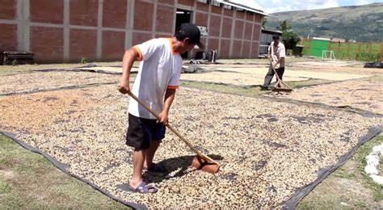COAUSOLES se dedica a la producción, procesamiento y exportación de café, utilizando técnicas sostenibles y respetuosas con el medio ambiente. La cooperativa tiene más de 44 años de experiencia en la industria cafetalera.
Horarios de Atención
- Lunes a Viernes: 7:30 AM - 12:00 PM y 1:00 PM - 4:30 PM
- Sábados: 7:30 AM - 12:00 PM
- Domingos: Cerrado
Servicios Ofrecidos
- Producción de Café: Incluye cafés naturales, pergamino lavado, pergamino honey, y más.
- Procesamiento: Trilla, clasificación, limpieza y tostado de café.
- Exportación: Exportación de cafés de especialidad con atributos únicos.
- Abonos Orgánicos: Producción de abonos orgánicos para la autosostenibilidad.
- Cosecha: Cosecha de café, cacao y otras frutas y verduras.
Ubicación
Dirección: Km. 101 1/2 Carretera a Las Chinamas, Cantón Llano La Laguna, Ahuachapán, El Salvador
Lausanne S.A. de C.V. (Café Monte Sión)
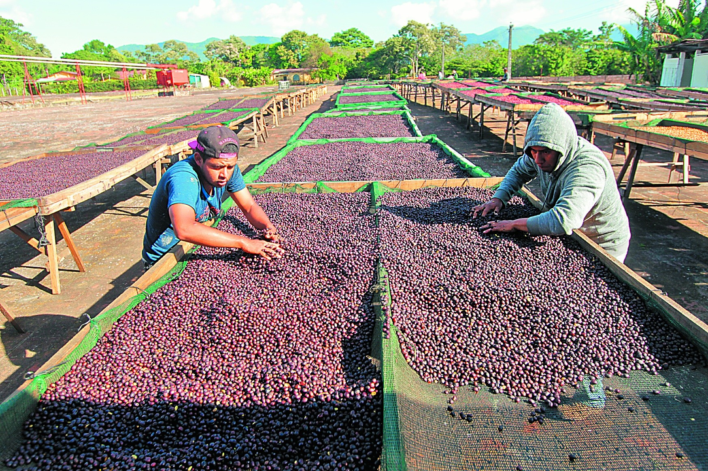Lausanne S.A. de C.V. se dedica a la producción y exportación de café de alta calidad y sostenible. Fundada en 1978, la empresa ha sido reconocida por su compromiso con la calidad y la sostenibilidad.
Horarios de Atención
- Lunes a Viernes: 7:30 AM - 12:00 PM y 1:00 PM - 4:30 PM
- Sábados: 7:30 AM - 12:00 PM
- Domingos: Cerrado
Servicios Ofrecidos
- Producción de Café: Cultivo y procesamiento de café de alta calidad.
- Exportación: Exportación de café sostenible a mercados internacionales.
- Certificaciones: La empresa cuenta con certificaciones como Rainforest Alliance, que garantizan prácticas sostenibles.
Ubicación
Dirección: Beneficio Maranatha, Cantón Lomas de Alarcón, Atiquizaya, Ahuachapán, El Salvador
Hiltex S.A. de C.V.

Hiltex S.A. de C.V. se especializa en la fabricación de hilos, fibras y textiles de alta calidad. La empresa es conocida por su compromiso con la innovación y la calidad en sus productos.
Horarios de Atención
- Lunes a Viernes: 7:30 AM - 5:00 PM
- Sábados: 8:00 AM - 12:00 PM
- Domingos: Cerrado
Servicios Ofrecidos
- Producción de Hilos y Fibras: Fabricación de hilos y fibras para diversas aplicaciones textiles.
- Textiles: Producción de tejidos y otros productos textiles.
- Innovación y Desarrollo: Investigación y desarrollo de nuevos productos y técnicas de fabricación.
Ubicación
Dirección: Km. 99 1/2 Carretera a San Salvador, Ahuachapán, El Salvador
Astrovisión S.A. de C.V.

Astrovisión S.A. de C.V. se especializa en servicios de tecnología, incluyendo televisión por cable y servicios de internet.
Horarios de Atención
- Lunes a Viernes: 8:00 AM - 5:00 PM
- Sábados: 8:00 AM - 12:00 PM
- Domingos: Cerrado
Servicios Ofrecidos
- Televisión por Cable: Amplia selección de canales nacionales e internacionales.
- Internet de Alta Velocidad: Conexiones rápidas y confiables para hogares y negocios.
- Soporte Técnico: Asistencia técnica para resolver problemas con los servicios contratados.
Ubicación
Dirección: Ciudad Pacífico, Calle Principal #14, Ahuachapán, El Salvador
Tigo
Tigo es una compañía de telecomunicaciones que opera en varios países de Hispanoamérica, incluyendo El Salvador. Es propiedad de la multinacional luxemburguesa Millicom International Cellular S.A. (MIC) y ofrece una amplia gama de servicios de telecomunicaciones.
Horarios de Atención
- Lunes a Viernes: 8:00 AM - 4:00 PM
- Sábados: 8:00 AM - 3:00 PM
- Domingos: Cerrado
Servicios Ofrecidos
- Telefonía Móvil: Planes pospago y prepago para celulares.
- Internet Móvil: Conexiones de alta velocidad con Red LTE 4G.
- Televisión por Cable: Amplia selección de canales nacionales e internacionales.
- Soporte Técnico: Asistencia para resolver problemas con los servicios contratados.
Sucursales en Ahuachapán
Sucursal Principal
Dirección: 4a Calle Oriente y 3a Avenida Norte #2-12, Barrio Las Flores, Ahuachapán.
Sucursal El Refugio
Dirección: Primera entrada después de Colonia Santa Elena, El Refugio, Ahuachapán.
Ferretería Freund
Ferretería Freund es una empresa salvadoreña que inició operaciones en 1913. Se dedica al comercio detallista y mayorista de productos de ferretería, herramientas, pinturas, decoración, hogar, jardinería, materiales de construcción, eléctrico, iluminación, fontanería y herrajes.
Servicios Ofrecidos
- Preparación de color y asesoría en pintura.
- Servicio de corte a la medida.
- Copias de llaves.
- Medición e instalación de cortinas.
- Instalación de aires acondicionados.
- Instalación de closets.
- Asesoría en eléctrico e iluminación.
- Instalación de escobillas a vehículos.
- Repuestos y servicio de mantenimiento de equipos.
- Servicio a domicilio.
Horarios de Atención
- Lunes a Viernes: 8:00 AM - 5:00 PM
- Sábado: 8:00 AM - 1:00 PM
- Domingo: Cerrado
Sucursal en Sonsonate
Dirección: Barrio El Ángel, Boulevard Óscar Osorio y 10a. Avenida Sur, contiguo al cuerpo de bomberos, Sonsonate.
Ferretería Vidrí
Vidrí es una empresa conocida en El Salvador por ofrecer una amplia gama de productos para la construcción, ferretería, hogar y más.
Servicios Ofrecidos
- Venta de materiales de construcción.
- Productos de ferretería.
- Artículos para el hogar y jardinería.
- Herramientas y equipos industriales.
Horario de Atención
- Lunes a Sábado: 8:00 AM - 6:30 PM
Ubicación en Sonsonate
Dirección: Km. 66, Frente al Bypass, Carretera a Acajutla, Sonsonate, El Salvador.
Súper Selectos
Súper Selectos es una cadena de supermercados líder en El Salvador, perteneciente al Grupo Calleja. Ofrecen una amplia gama de productos y servicios para satisfacer las necesidades de sus clientes.
Servicios Ofrecidos
- Productos de supermercado: alimentos frescos, productos enlatados, bebidas, productos de limpieza, entre otros.
- Servicio a domicilio: puedes hacer tus compras en línea y recibirlas en tu hogar.
- Promociones y descuentos: ofertas especiales y descuentos en diversos productos.
- Programas de fidelidad: beneficios adicionales para clientes frecuentes.
Horario de Atención
- Lunes a Jueves: 8:00 AM - 10:00 PM
- Viernes: 7:00 AM - 10:00 PM
- Domingo: 7:00 AM - 9:00 PM
Ubicaciones en Sonsonate
Súper Selectos El Encuentro
Dirección: Centro Comercial El Encuentro, Sonsonate, El Salvador.
Teléfono: 2267-6767
Súper Selectos Sonsonate
Dirección: Km. 66, Frente al Bypass, Carretera a Acajutla, Sonsonate, El Salvador.
Corporación Denisse, S.A. de C.V.
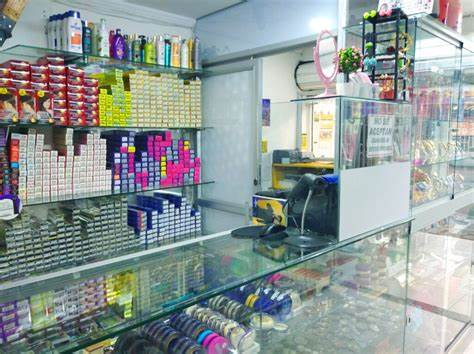Corporación Denisse ofrece una variedad de servicios relacionados con la distribución de productos de belleza y perfumería.
Servicios Ofrecidos
- Venta de productos de belleza y cuidado personal: Incluye cosméticos, perfumes, y productos de cuidado personal de la marca Zermat Internacional.
- Joyería brasileña: Ofrecen una selección de joyería importada de Brasil.
- Asesoría independiente: Brindan la oportunidad de que las personas se conviertan en asesoras independientes, permitiéndoles iniciar su propio negocio vendiendo los productos de la empresa.
Horario de Atención
- Lunes a Viernes: 8:00 AM - 5:00 PM
- Sábado: 8:00 AM - 12:00 PM
Ubicaciones en Sonsonate
Corporación Denisse Sucursal Principal en Sonsonate Centro
Dirección: Calle Principal, Sonsonate Centro.
Indicaciones: Cerca del parque central, a unos metros de la iglesia principal.
Corporación Denisse Sucursal en Izalco
Dirección: Avenida Central, Izalco.
Indicaciones: Frente al mercado municipal, al lado de la farmacia Izalco.
Corporación Denisse Sucursal en Acajutla
Dirección: Carretera a la Playa, Acajutla.
Indicaciones: A 500 metros del puerto, junto a la gasolinera Texaco.
Autokia, S.A. de C.V.
Autokia es una empresa dedicada a la venta y mantenimiento de vehículos.
Servicios Ofrecidos
- Venta de vehículos nuevos y usados: Ofrecen una amplia gama de automóviles de diferentes marcas y modelos.
- Mantenimiento y reparaciones: Servicios de mecánica general, cambio de aceite, alineación y balanceo, entre otros.
- Financiamiento: Opciones de financiamiento para la compra de vehículos.
- Seguros: Asesoría y venta de seguros para vehículos.
Horario de Atención
- Lunes a Viernes: 8:00 AM - 5:00 PM
- Sábado: 8:00 AM - 12:00 PM
- Domingo: Cerrado
Ubicaciones en Sonsonate
Autokia Sucursal Principal en Sonsonate Centro
Dirección: Avenida Oidor, Sonsonate.
Indicaciones: Cerca del parque central, a unos metros de la iglesia principal.
Autokia Sucursal en Izalco
Dirección: Avenida Central, Izalco.
Indicaciones: Frente al mercado municipal, al lado de la farmacia Izalco.
Autokia Sucursal en Acajutla
Dirección: Carretera a la Playa, Acajutla.
Indicaciones: A 500 metros del puerto, junto a la gasolinera Texaco.
Walmart
Walmart es una cadena de supermercados internacional que ofrece una amplia variedad de productos y servicios en San Miguel.
Servicios Ofrecidos
- Venta de productos de abarrotes: Incluye alimentos frescos, enlatados, y productos de limpieza.
- Electrodomésticos y electrónicos: Ofrecen una variedad de electrodomésticos, computadoras, y otros dispositivos electrónicos.
- Ropa y accesorios: Venta de ropa para toda la familia, así como accesorios y calzado.
- Artículos para el hogar: Productos de decoración, muebles, y utensilios de cocina.
- Farmacia: Servicios de farmacia y venta de medicamentos.
- Servicio a domicilio: Puedes hacer tus compras en línea y recibirlas en tu hogar.
- Pick up: Servicio de recogida en tienda para compras realizadas en línea.
Horario de Atención
- Domingo a Jueves: 7:00 AM - 9:00 PM
- Viernes y Sábados: 7:00 AM - 11:00 PM
Ubicación en San Miguel
Dirección: Boulevard Kury, Cantón El Jute, San Miguel, frente al Club Deportivo Águila.
Teléfono: +503 2523 6800
Productos Alimenticios Diana S.A. de C.V.
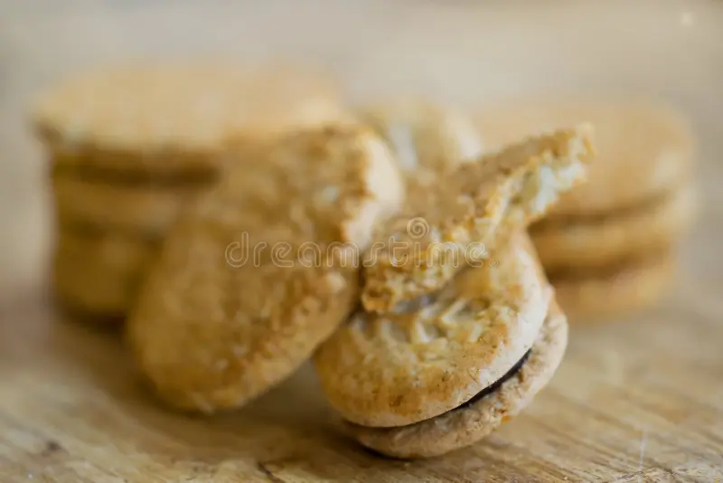Productos Alimenticios Diana S.A. de C.V. es una empresa salvadoreña fundada en 1951, reconocida por sus populares boquitas y productos de confitería distribuidos en toda Centroamérica y Estados Unidos.
Información de la Empresa
- Fundación: 1951 por Max Olano y Pablo Tesak.
- Productos: Boquitas, confitería, galletas, y otros productos alimenticios.
- Presencia: Distribución en toda Centroamérica y Estados Unidos.
Servicios Ofrecidos
- Producción y distribución de alimentos: Incluye una amplia gama de boquitas, confitería y galletas.
- Centros de distribución: Cuenta con 18 centros en la región, incluyendo 4 distribuidores externos.
- Exportación: Exportan el 70% de su producción a países de la región y Estados Unidos.
Horario de Atención
- Lunes a viernes: 8:00 AM - 5:00 PM
- Sábados: 8:00 AM - 12:00 PM
- Domingos: Cerrado
Sucursales en San Miguel
Sucursal Principal en San Miguel
Dirección: Avenida Roosevelt, San Miguel.
Indicaciones: Cerca del parque central, a unos metros de la catedral.
Sucursal en El Encuentro
Dirección: Centro Comercial El Encuentro, San Miguel.
Indicaciones: En el cantón El Sitio, cerca de la carretera que conduce a La Unión.
Zagrofer
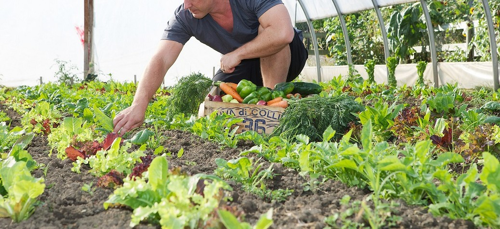Zagrofer es una empresa salvadoreña con más de 10 años de experiencia en el sector agro-industrial. Se especializa en la inducción, desarrollo y comercialización de productos que mejoran el desempeño y desarrollo agrícola tanto a nivel nacional como internacional.
Servicios Ofrecidos
- Agroquímicos: Amplia variedad de herbicidas e insecticidas para una cosecha libre de plagas.
- Fertilizantes: Diversos abonos y fórmulas para el crecimiento de cultivos.
- Mallas y Alambres: Proveen protección adecuada y uniformidad en los frutos.
- Semillas, Sacos y Silos: Semillas de granos básicos, frutas y hortalizas; silos y sacos de almacenamiento.
- Asesoría Técnica: Capacitación y asesoría para mejorar producción y calidad de cultivos.
Horario de Atención
- Lunes a Sábado: 7:00 AM - 5:00 PM
- Domingos: Cerrado
Ubicación en San Miguel
Dirección: 11A Calle Oriente y 2A Avenida Sur, San Miguel, San Miguel Department.
Teléfono: +503 7607 4601
Grupo La Merced, S.A. de C.V.
Grupo La Merced, S.A. de C.V. es una empresa salvadoreña especializada en la instalación de redes, cámaras de seguridad, impresión de carnets y más. Fundada en abril de 2016, se ha destacado por ofrecer soluciones tecnológicas y de seguridad a sus clientes.
Servicios Ofrecidos
- Instalación de redes: Configuración y mantenimiento de redes informáticas.
- Cámaras de seguridad: Venta e instalación de sistemas de videovigilancia.
- Impresión de carnets: Servicios de diseño e impresión de carnets de identificación.
- Sistemas solares: Equipos y soluciones para energía solar.
- Electricidad e informática: Venta de equipos eléctricos y de informática.
Horario de Atención
- Lunes a Viernes: 8:00 AM - 5:00 PM
- Sábados: 8:00 AM - 12:00 PM
- Domingos: Cerrado
Ubicación en San Miguel
Dirección: Avenida Roosevelt Sur #702, San Miguel.
Teléfono: +503 7833 6155
Zamorano Group, S.A. de C.V.
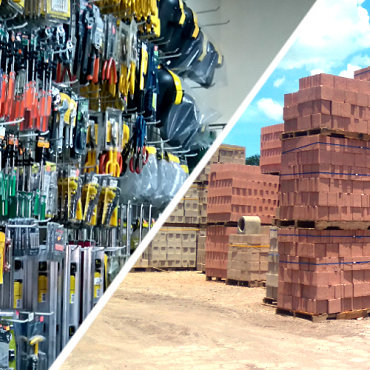Zamorano Group, S.A. de C.V. es una empresa salvadoreña con más de 20 años de experiencia en diversos sectores como la agricultura, alimentos, ferretería, materia prima, plásticos y veterinaria.
Servicios Ofrecidos
- Agroservicio: Soluciones para el control de plagas y cuidado de cultivos.
- Ferretería y Construcción: Amplia gama de productos para construcción, jardinería, fontanería y electricidad.
- Veterinaria: Productos para el cuidado y salud de animales.
- Alimentos: Nutrición para ganado y mascotas.
- Plásticos: Artículos de plástico para el hogar y otros usos.
Horario de Atención
- Lunes a Sábado: 6:45 AM - 5:00 PM
- Domingos: 6:45 AM - 12:00 PM
Ubicación en San Miguel
Dirección: 5ta Calle Poniente #109, Barrio La Merced, San Miguel.
Teléfono: +503 2660 5015
Empresa Eléctrica de Oriente (EEO)
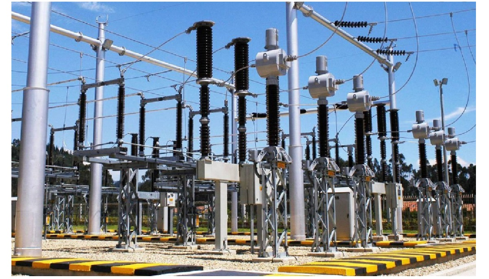Fundación: 1995
Cobertura: Distribuye energía en los departamentos de San Miguel, Morazán, La Unión, San Vicente y parte de Usulután.
Clientes: Beneficia a más de 352,000 clientes en un área de 6,530 km².
Servicios Ofrecidos
- Distribución de energía eléctrica: Proveen electricidad a hogares, empresas y grandes clientes.
- Atención al cliente: Asesoría técnica y comercial para mejorar la operatividad del suministro eléctrico.
- Pagos y consultas en línea: Opciones para realizar consultas y pagos de facturas en línea.
Horario de Atención
- Lunes a viernes: 7:30 AM - 4:30 PM
- Sábados: 8:00 AM - 12:00 PM
Ubicación en San Miguel
Dirección: 4.ª Calle Oriente #405, San Miguel.
Indicaciones: Cerca del parque central, a unos metros de la catedral.
Café Perquín

Ubicación: Perquín, Morazán, El Salvador.
Productos: Café cultivado con técnicas de agricultura orgánica y procesado de manera artesanal.
Especialidad: Ofrecen un café aromático y de alta calidad, cultivado en su propia finca.
Servicios Ofrecidos
- Producción de café: Cultivan y procesan café utilizando métodos orgánicos y sostenibles.
- Turismo: Ofrecen visitas a su finca para conocer el proceso de cultivo y producción del café.
- Restaurante: En el restaurante de la finca, puedes disfrutar de productos frescos y naturales, como horchata, chocolate, mermeladas, pan, galletas y pastelería, todos preparados en casa sin aditivos artificiales.
Horarios
- Restaurante: Abierto todos los días de 6:00 AM a 8:00 PM.
Ubicación
Dirección: Perquín, Morazán, El Salvador.
Indicaciones: La finca y el restaurante están ubicados en la Ruta de la Paz, una zona conocida por su belleza natural y su historia.
Cooperativa de Caficultores de Morazán
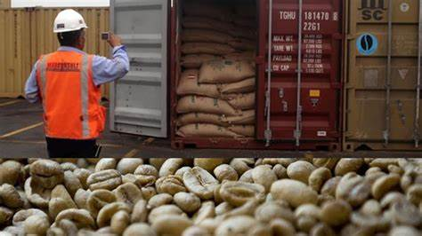Fundación: La cooperativa fue fundada en la década de 1980.
Ubicación: Principalmente en la región de Osicala, Morazán.
Productos: Café de variedades como Bourbon y Pacamara, conocido por su sabor dulce y floral.
Servicios Ofrecidos
- Producción de café: Cultivan y procesan café utilizando métodos sostenibles y orgánicos.
- Exportación: Exportan café a mercados internacionales como Inglaterra, Japón y Estados Unidos.
- Capacitación y asesoría: Ofrecen formación en buenas prácticas agrícolas para mejorar la calidad del café.
Horarios
- Lunes a viernes: 8:00 AM - 5:00 PM.
- Sábados: 8:00 AM - 12:00 PM.
- Domingos: Cerrado.
Ubicación
Oficina Principal en Osicala:
Dirección: Osicala, Morazán.
Indicaciones: Cerca del centro del municipio, en la zona cafetalera.
Cooperativa de Caficultores de Morazán
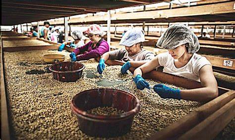Fundación: Establecida en la década de 1980.
Ubicación: Principalmente en la región de Osicala, Morazán.
Productos: Especializada en variedades de café como Bourbon y Pacamara, reconocidas por su sabor dulce y floral.
Servicios Ofrecidos
- Producción de café: Utilizan métodos sostenibles y orgánicos para cultivar y procesar el café.
- Exportación: Exportan su café a mercados internacionales, incluyendo Inglaterra, Japón y Estados Unidos.
- Capacitación y asesoría: Ofrecen formación en buenas prácticas agrícolas para mejorar la calidad del café.
Horarios
- Lunes a viernes: 8:00 AM - 5:00 PM.
- Sábados: 8:00 AM - 12:00 PM.
- Domingos: Cerrado.
Ubicación
Oficina Principal en Osicala:
Dirección: Osicala, Morazán.
Indicaciones: Cerca del centro del municipio, en la zona cafetalera.
FEDECACES (Federación de Asociaciones Cooperativas de Ahorro y Crédito de El Salvador)
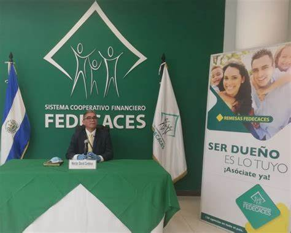Servicios Ofrecidos
- Cuentas de ahorro: Ofrecen diferentes tipos de cuentas de ahorro para sus asociados.
- Líneas de crédito: Préstamos personales, hipotecarios y para negocios.
- Pago de servicios: Facilitan el pago de servicios públicos y privados.
- Remesas familiares: Envío y recepción de remesas desde el extranjero.
- Seguros: Productos de seguros de vida y daños a través de su aseguradora cooperativa, Seguros Futuro.
Horarios
- Lunes a viernes: 8:00 AM - 4:00 PM.
- Sábados: 8:00 AM - 12:00 PM.
- Domingos: Cerrado.
Ubicación
Sucursal La Unión:
Dirección: 2ª Calle Oriente y 4ª Avenida Norte, Barrio El Centro, La Unión.
Indicaciones: Cerca del parque central de La Unión, a unos metros de la alcaldía municipal.
Puerto La Unión Centroamericana (Puerto de Cutuco)
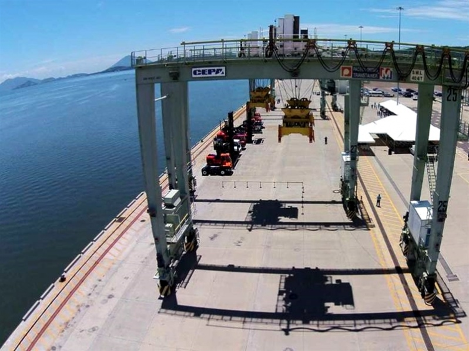Información General
Ubicación: Ciudad de La Unión, Departamento de La Unión, El Salvador.
Operador: Comisión Ejecutiva Portuaria Autónoma (CEPA).
Servicios Ofrecidos
- Avituallamiento: Suministro de víveres y otros bienes necesarios para los viajes.
- Entrega de efectivo al capitán: Gestión de fondos para las necesidades del buque.
- Cambio de tripulación: Transporte de tripulantes desde y hacia el puerto.
- Aprovisionamientos: Abastecimiento de alimentos y otros bienes.
- Inspecciones de calados: Medición de los calados del buque para la gestión de cargamentos.
Horarios
Los horarios de operación pueden variar, pero generalmente el puerto está activo las 24 horas del día para facilitar el comercio y las operaciones marítimas.
Ubicación
El Puerto La Unión Centroamericana se encuentra en la ciudad de La Unión, en el departamento de La Unión, El Salvador. Está situado en la Bahía de La Unión, en el Golfo de Fonseca.
Distribuidora La Unión
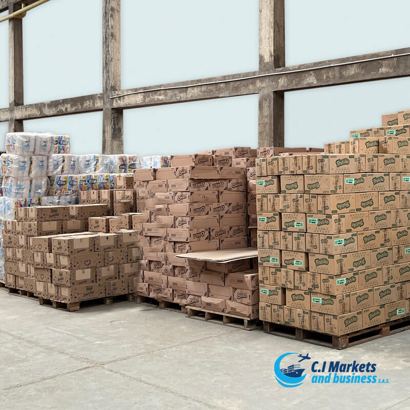Información General
Nombre: Distribuidora La Unión
Productos: Detergentes y jabones, confitería y alimentos, productos de ferretería, productos plásticos y paneles solares.
Servicios Ofrecidos
- Detergentes y jabones
- Confitería y alimentos
- Productos de ferretería
- Productos plásticos
- Paneles solares
Ubicación
Dirección: Diagonal 3, Calz. Atanasio Tzul 43-15 Zona 12, Guatemala, Guatemala.
Contacto
Teléfono: +502 2382 3200
Correo electrónico: info@uniongt.com
Ferretería La Unión

Información General
Nombre: Ferretería La Unión
Productos: Herramientas manuales y eléctricas, suministros de construcción, pinturas, acabados, fontanería y electricidad.
Servicios Ofrecidos
- Venta de herramientas manuales y eléctricas
- Suministros de construcción
- Pinturas y acabados
- Fontanería y electricidad
Ubicación
Dirección: Cra. 9 #9-70, La Unión, Antioquia.
Horarios
Lunes a sábado: 7:30 AM a 6:00 PM
Domingo: 7:30 AM a 12:00 PM
Almacenes Vidrí - La Libertad
Información General
Nombre: Almacenes Vidrí
Fundación: 1917
Almacenes Vidrí es una ferretería que cuenta con 16 sucursales distribuidas en varias zonas de El Salvador. Sus sucursales están segmentadas en dos tipos: auto-servicio o ‘home-centers’ y tipo industrial o mostrador.
Productos
Su catálogo abarca 22 departamentos: eléctrico, iluminación y ventilación, audio video y redes, fontanería, baños, pintura, cerrajería, ferretería, materiales de construcción, tornillería, herramientas eléctricas y manuales, electrodomésticos, hogar, outdoors, limpieza, bombas y calentadores, industrial, refrigeración, automotriz, jardinería, y maquinaria para jardín.
Servicios Ofrecidos
- Ferretería: Herramientas, tornillería, pinturas, y más.
- Materiales de construcción: Cemento, bloques, varillas, etc.
- Artículos para el hogar: Electrodomésticos, utensilios de cocina, muebles.
- Jardinería: Herramientas y productos para el cuidado del jardín.
- Automotriz: Accesorios y herramientas para vehículos.
Horarios de Atención
Lunes a Sábado: 7:30 AM - 7:00 PM
Domingo: 8:00 AM - 5:00 PM
Ubicación de Sucursales en La Libertad
Vidrí Lourdes
Dirección: Carretera Panamericana de San Salvador a Santa Ana, Km 25.5 y calle Principal Las Conchitas, Col. Las Moras, Colón.
Vidrí Merliot
Dirección: Bulevar Merliot, Santa Tecla.
Vidrí Quezaltepeque
Dirección: Avenida José María Castro, Quezaltepeque.
ANDA - La Libertad
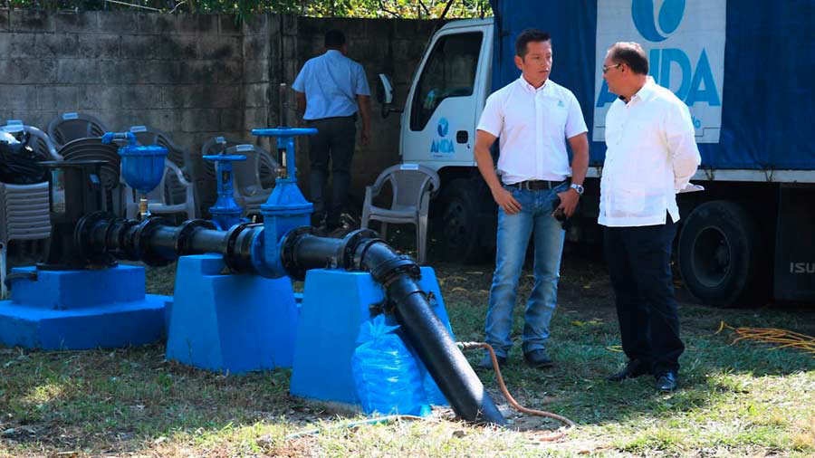Información General
ANDA ofrece una variedad de servicios relacionados con el suministro de agua potable y el tratamiento de aguas residuales.
Servicios
- Conexiones de agua potable
- Mantenimiento y reparación de tuberías
- Tratamiento de aguas residuales
- Facturación y cobro de servicios
- Atención al cliente para consultas y reportes de problemas
Horarios de Atención
Lunes a Viernes: 8:00 a.m. - 4:00 p.m. (sin cerrar al mediodía)
Sábados: 8:00 a.m. - 12:00 m.d.
Ubicaciones de Sucursales en La Libertad
Santa Tecla
Dirección: Calle Daniel Hernández, local 3-2, Plaza Concepción, Santa Tecla.
Teléfonos: 2514-3291 y 2514-3288
Antiguo Cuscatlán
Dirección: Centro Comercial Las Cascadas, local 201, Carretera Panamericana, Antiguo Cuscatlán.
Teléfono: 2534-9672
Hencorp Gestora de Fondos de Inversión, S.A.
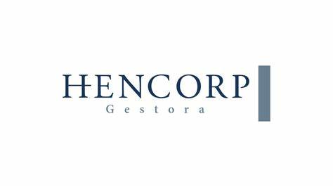Sobre Hencorp Gestora de Fondos de Inversión, S.A.
Hencorp Gestora de Fondos de Inversión, S.A. es una empresa dedicada a la gestión de fondos de inversión. Su misión es apoyar el éxito financiero de sus clientes y generar valor para sus accionistas. La empresa se destaca por su transparencia, responsabilidad y desarrollo profesional.
Servicios Ofrecidos
- Fondos de Inversión Abiertos: Inversión en títulos valores en el mercado de valores de El Salvador, tanto del sector público como privado.
- Atención al Partícipe: Información sobre productos, procedimientos para contacto, marco legal, y gestión de quejas y reclamos.
- Asesoría Financiera: Servicios de asesoría para optimizar las inversiones de sus clientes.
Horarios de Atención
Lunes a Viernes: 9:00 a.m. - 6:00 p.m.
Sábados: 9:00 a.m. - 12:00 m.d.
Ubicación en La Libertad
Santa Elena, Antiguo Cuscatlán
Dirección: Edificio D’CORA, 2do. piso, Boulevard Orden de Malta y Calle el Boquerón, Urbanización Santa Elena, Antiguo Cuscatlán, La Libertad.
Teléfonos: +503 2212-8700 y +503 2289-2577
Nobs Hidrofusion S.A. de C.V.
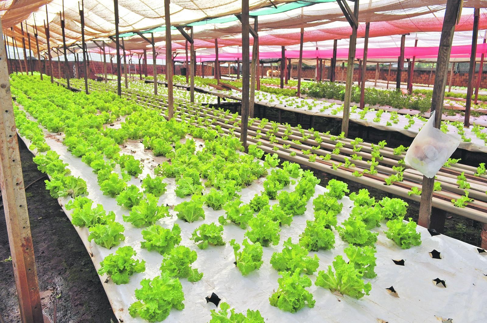Sobre Nobs Hidrofusion S.A. de C.V.
Nobs Hidrofusion S.A. de C.V. es una empresa con sede en El Salvador dedicada a la producción de ingredientes naturales para fragancias y sabores. La empresa se enfoca en mantener altos estándares de control de calidad y en la innovación a través de su departamento de investigación y desarrollo.
Servicios Ofrecidos
- Producción de Ingredientes Naturales: Especializados en fragancias y sabores naturales.
- Investigación y Desarrollo: Innovación constante en la creación de nuevos productos.
- Control de Calidad: Estrictos procesos para asegurar la calidad de sus productos.
Horarios de Atención
Lunes a Viernes: 8:00 a.m. - 5:00 p.m.
Sábados: 8:00 a.m. - 12:00 m.d.
Ubicación en La Libertad
Colón, La Libertad
Nota: La dirección específica y números de contacto no están disponibles actualmente.
Coca-Cola FEMSA
Sobre Coca-Cola FEMSA
Coca-Cola es una de las empresas de bebidas más grandes del mundo y tiene operaciones en muchos países, incluyendo El Salvador. En La Libertad, Coca-Cola FEMSA es la embotelladora y distribuidora principal de los productos Coca-Cola.
Servicios Ofrecidos
- Producción y Distribución de Bebidas: Incluye refrescos, jugos, aguas y bebidas energéticas.
- Atención al Cliente: Servicios de soporte y atención para consultas y reclamos.
Horarios de Atención
Lunes a Viernes: 8:00 a.m. - 5:00 p.m.
Sábados: 8:00 a.m. - 12:00 m.d.
Ubicación en La Libertad
Santa Tecla
Nota: La dirección específica y números de contacto no están disponibles actualmente.
Industrias St. Jack’s, S.A. de C.V.
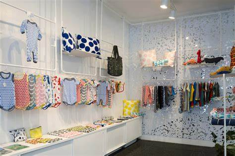Sobre Industrias St. Jack’s
Industrias St. Jack’s es una empresa líder en la fabricación y comercialización de ropa para bebés, niños y adultos en Centroamérica. La empresa se compromete a diseñar, fabricar y distribuir productos de alta calidad que superen las expectativas de sus clientes.
Servicios Ofrecidos
- Fabricación de Ropa: Incluye camisetas, blusas, conjuntos, pijamas y polos.
- Comercialización: Venta de ropa a nivel regional, con un enfoque en la calidad y el diseño innovador.
- Atención al Cliente: Servicios de soporte y atención para consultas y pedidos.
Horarios de Atención
Lunes a Viernes: 8:00 a.m. - 5:00 p.m.
Sábados: 8:00 a.m. - 12:00 m.d.
Ubicación en La Libertad
Antiguo Cuscatlán
Dirección: Zona Industrial La Laguna, Antiguo Cuscatlán, La Libertad.
Teléfonos: +503 2248-6015 y +503 2248-6000
Ingeniería Asociada, S.A. de C.V. (IASA)
Sobre Ingeniería Asociada (IASA)
Ingeniería Asociada, S.A. de C.V. (IASA) es una empresa líder en el sector de la construcción electromecánica, telecomunicaciones y obras civiles. Fundada en 1977, ha desarrollado proyectos en El Salvador, Guatemala, Honduras y Panamá.
Servicios Ofrecidos
- Proyectos Electromecánicos: Diseño, suministro, montaje y construcción de líneas de transmisión y subestaciones eléctricas.
- Telecomunicaciones: Instalación de cables de fibra óptica y sistemas de telecomunicaciones.
- Obras Civiles: Construcción de infraestructura, fundaciones, sistemas de tratamiento de aguas y obras de protección.
- Suministros: Provisión de equipos y materiales para proyectos de alta tensión y telecomunicaciones.
Horarios de Atención
Lunes a Viernes: 8:00 a.m. - 5:00 p.m.
Sábados: 8:00 a.m. - 12:00 m.d.
Ubicación en La Libertad
Antiguo Cuscatlán
Dirección: Jardines de Guadalupe, Calle Caribe No. 13, Antiguo Cuscatlán, La Libertad.
Teléfonos: +503 2524-0400
Protech El Salvador, S.A. de C.V.

Sobre Protech El Salvador
Protech El Salvador, S.A. de C.V. es una empresa dedicada a la fabricación y comercialización de productos químicos y relacionados. Fundada en 2006, se especializa en la distribución de productos químicos para diversas industrias.
Servicios Ofrecidos
- Fabricación de Productos Químicos: Incluye una amplia gama de productos químicos para diferentes aplicaciones industriales.
- Comercio al por Mayor: Distribución de productos químicos a nivel nacional e internacional.
- Asesoría Técnica: Servicios de consultoría y asesoría técnica para el uso adecuado de sus productos.
Horarios de Atención
Lunes a Viernes: 8:00 a.m. - 5:00 p.m.
Sábados: 8:00 a.m. - 12:00 m.d.
Ubicación en La Libertad
Merliot, Cuscatlán
Dirección: Jardines de la Sabana, Calle La Sabana, Polígono C-5 #25, Merliot, Cuscatlán.
Teléfonos: Información no disponible.
Hencorp Valores S.A. Titularizadora
Sobre Hencorp Valores S.A. Titularizadora
Hencorp Valores S.A. Titularizadora es una empresa especializada en la titularización de activos. Forma parte del Grupo Hencorp y se dedica a estructurar y gestionar proyectos de titularización, ofreciendo soluciones financieras innovadoras y eficientes.
Servicios Ofrecidos
- Estudio de Factibilidad de Proyectos de Titularización: Evaluación de la viabilidad de proyectos de titularización.
- Estructuración de Proyectos de Titularización: Diseño y ejecución de estructuras financieras para la titularización de activos.
- Gestión de Activos Titularizados: Administración y monitoreo de los activos titularizados para asegurar su rendimiento.
Horarios de Atención
Lunes a Viernes: 9:00 a.m. - 6:00 p.m.
Sábados: 9:00 a.m. - 12:00 m.d.
Ubicación en La Libertad
Santa Elena, Antiguo Cuscatlán
Dirección: Edificio D’CORA, 2do. piso, Boulevard Orden de Malta y Calle el Boquerón, Urbanización Santa Elena, Antiguo Cuscatlán, La Libertad.
Teléfonos: +503 2212-8700
Corporación Hotelera Sociedad Anónima de Capital Variable
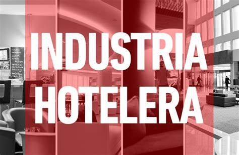Sobre la Empresa
Corporación Hotelera Sociedad Anónima de Capital Variable es una empresa dedicada a la industria hotelera en el departamento de Cuscatlán, El Salvador.
Dirección Principal
Dirección: Final Boulevard Los Próceres, 200 metros al oriente de Basílica de Guadalupe, Cuscatlán, Cuscatlán, El Salvador.
Horarios de Atención
Lunes a Viernes: 8:00 a.m. - 6:00 p.m.
Sábado: 9:00 a.m. - 1:00 p.m.
Domingo: Cerrado
Servicios
- Alojamiento: Habitaciones y suites para huéspedes.
- Restauración: Restaurantes y cafeterías dentro de las instalaciones.
- Eventos: Salones para conferencias, bodas y otros eventos.
- Recreación: Piscinas, gimnasios y áreas de esparcimiento.
Ubicaciones de las Sucursales en Cuscatlán
Sucursal Principal: Final Boulevard Los Próceres, 200 metros al oriente de Basílica de Guadalupe, Cuscatlán.
Sucursal Suchitoto: Calle Principal, Suchitoto, Cuscatlán.
Corten, S.A. de C.V.
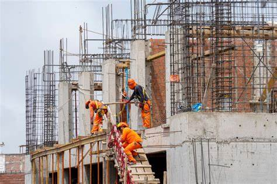Información de la Empresa
Dirección Principal: Km. 28.5 Carretera a Comalapa, Olocuilta, La Paz.
Teléfono: 2349-0400
Horarios de Atención
Lunes a Viernes: 8:00 a.m. - 5:00 p.m.
Sábado: 8:00 a.m. - 12:00 p.m.
Domingo: Cerrado
Servicios Ofrecidos
- Terracería: Movimientos masivos de tierra, diseños de terrazas, cortes y rellenos estructurales.
- Urbanización: Diseño y construcción de urbanizaciones en el sector público y privado.
- Obras de Protección: Impermeabilización, anclajes, estabilización y mejoramiento de obras.
- Infraestructura Vial: Diseño y ejecución de vías pavimentadas y no pavimentadas.
- Pavimentos y Agregados: Desarrollo de pavimentos y suministro de agregados.
- Edificaciones: Construcción de edificios utilizando las mejores prácticas.
- Telecomunicaciones: Proyectos relacionados con infraestructura de telecomunicaciones.
- Agroindustria: Proyectos productivos como estanques para acuicultura y riego por goteo.
Ubicaciones de las Sucursales en La Paz
Sucursal Principal: Km. 28.5 Carretera a Comalapa, Olocuilta, La Paz.
Aka Hotel & Home Supplies
Información de la Empresa
Dirección Principal: Km. 12.5 Carretera a Comalapa, San Marcos, San Salvador.
Horarios de Atención
Lunes a Viernes: 8:00 a.m. - 5:00 p.m.
Sábado: 8:00 a.m. - 1:00 p.m.
Domingo: Cerrado
Servicios Ofrecidos
- Distribución de Artículos para Hotelería: Vajillas, cristalería, cubertería, utensilios de cocina, mobiliario, textiles y más.
- Suministros para el Hogar: Electrodomésticos, muebles, artículos de decoración y otros productos para el hogar.
- Asesoría y Consultoría: Servicios de asesoría para la selección de productos adecuados para hoteles y hogares.
Ubicaciones de las Sucursales en Cuscatlán
Sucursal Principal: Km. 12.5 Carretera a Comalapa, San Marcos, San Salvador.
Fun Crafts International, S.A. de C.V.
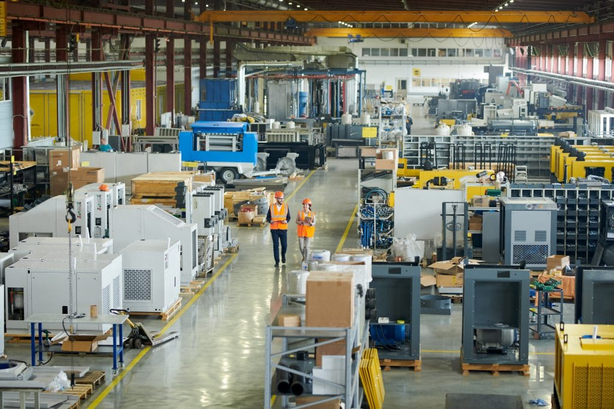Información de la Empresa
Dirección Principal: Km 28.5 Carretera a Comalapa, Zona Franca Internacional, Bodega 1 y 2, Olocuilta, La Paz.
Teléfono: 2389-8604
Sitio Web: funcrafts4u.com
Horarios de Atención
Lunes a Viernes: 8:00 a.m. - 5:00 p.m.
Sábado: 8:00 a.m. - 12:00 p.m.
Domingo: Cerrado
Servicios y Productos
- Categorías de Productos: Hogar, decoración, juguetes, estaciones y otros productos derivados de la madera.
- Exportación: Exportan a Centroamérica y Sudamérica, aprovechando acuerdos de libre comercio.
- Producción Local: La producción se realiza 100% en El Salvador, beneficiando a los clientes con una logística más centralizada.
- Diseños Innovadores: Productos decorativos de madera con diseños altamente innovadores que superan las expectativas del cliente.
- Compromiso con la Calidad: Enfocados en la mejora continua y en entregar productos durables y de alta calidad.
Ubicación de la Sucursal en La Paz
Sucursal Principal: Km 28.5 Carretera a Comalapa, Zona Franca Internacional, Bodega 1 y 2, Olocuilta, La Paz.
Caja de Crédito de Zacatecoluca
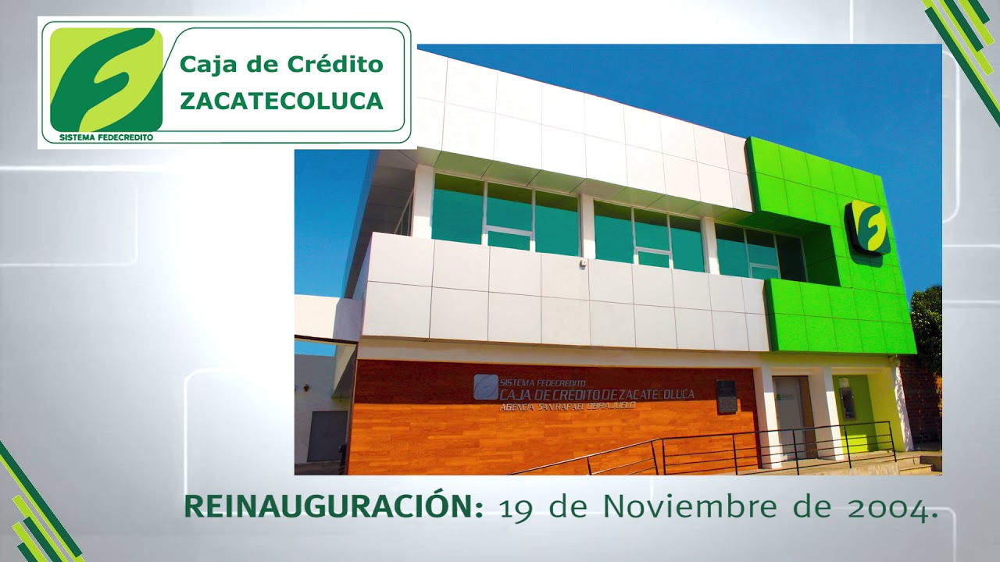Información de la Empresa
Dirección Principal: 2a Calle Poniente y 4a Avenida Norte, Zacatecoluca, La Paz.
Teléfono: 2345-6789
Sitio Web: cajazacate.com.sv
Horarios de Atención
Lunes a Viernes: 8:00 a.m. - 4:00 p.m.
Sábado: 8:00 a.m. - 12:00 p.m.
Domingo: Cerrado
Servicios
- Créditos: Préstamos personales, comerciales y agrícolas.
- Ahorros: Cuentas de ahorro y depósitos a plazo.
- Servicios Financieros: Transferencias, pagos de servicios, y más.
Historia
La Caja de Crédito de Zacatecoluca fue fundada en 1942 con el objetivo de proporcionar financiamiento a los sectores productivos de Zacatecoluca.
Ubicaciones de las Sucursales en La Paz
Sucursal Principal
Dirección: 1.ª Avenida Sur, n.° 4, Barrio San José, Zacatecoluca.
Sucursal Santiago Nonualco
Dirección: Calle Principal, Santiago Nonualco.
Enerland Group El Salvador S.A. de C.V.

Información de la Empresa
Sector: Infraestructura y Energía Eléctrica
Especialización: Energía solar fotovoltaica
Sitio Web: enerlandgroup.com
Proyectos
Enerland Group ha realizado varios proyectos fotovoltaicos en El Salvador, con una inversión de más de 30 millones de dólares, consolidándose como un referente en la región centroamericana.
Servicios
- Ingeniería Fotovoltaica: Diseño y ejecución de proyectos de energía solar.
- Consultoría: Asesoría en proyectos de energía renovable.
- Mantenimiento: Servicios de mantenimiento para instalaciones fotovoltaicas.
Ubicación
Dirección Principal: Calle Bilbilis (Plataforma Logística), 18 - Nav a 4, 50197 Zaragoza, España.
Ingenio La Cabaña
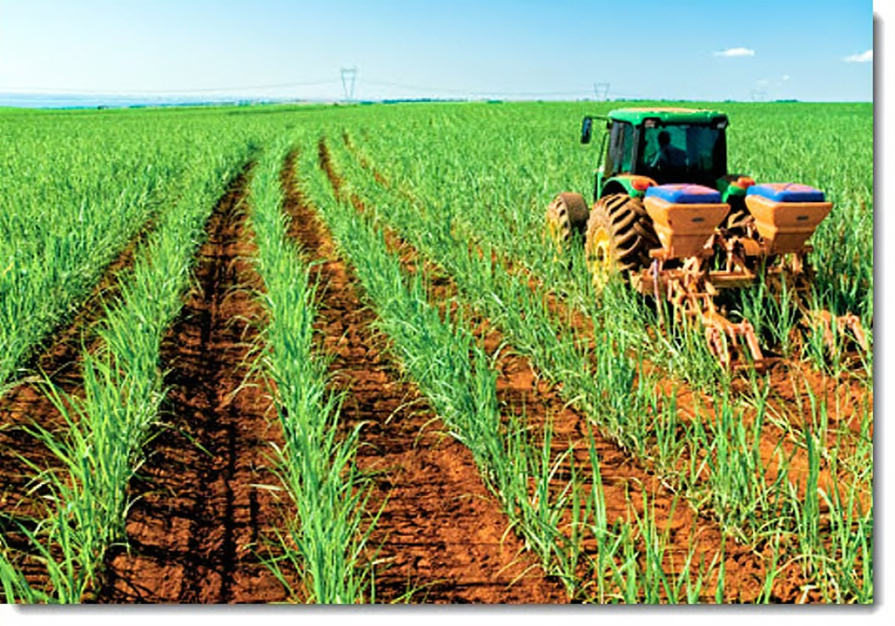Información de la Empresa
Dirección Principal: Km 3 vía Guachené, Cauca, Colombia.
Teléfono: 602-3930300
Horarios de Atención
Lunes a Viernes: 8:00 AM - 5:00 PM
Sábado: 8:00 AM - 12:00 PM
Domingo: Cerrado
Servicios
- Producción de Azúcar: Azúcar blanca y cruda (morena) para el mercado nacional e internacional.
- Cogeneración de Energía: Producción de energía a partir de biomasa.
- Sostenibilidad Social y Ambiental: Proyectos de responsabilidad social y ambiental en la región.
Ubicaciones de las Sucursales
Planta de Producción
Dirección: Km 3 vía Guachené, Cauca, Colombia.
Oficina en Cali
Dirección: Cali, Colombia.
Asociación Salvadoreña de Industriales (ASI)
Información de la Empresa
Dirección Principal: Calle Roma y Liverpool, Colonia Roma, San Salvador, El Salvador.
Teléfono: +503 2267 9200
Sitio Web: industriaelsalvador.com
Horarios de Atención
Lunes a Viernes: 8:00 AM - 5:00 PM
Servicios
- Capacitación: Programas de formación y actualización para trabajadores de la industria.
- Estudios e Informes: Análisis especializados y estudios técnicos sobre el desempeño económico y normativo del país.
- Eventos: Organización de eventos y actividades para promover el desarrollo industrial.
- Apoyo a Empresas: Asesoría y respaldo a empresas industriales, facilitando su crecimiento y competitividad.
Ubicación de la Sucursal
Sede Central
Dirección: Calle Roma y Liverpool, Colonia Roma, San Salvador, El Salvador.
Asociación Comité Contra el Sida (CoCoSI)
Información de la Organización
Dirección: El Zapote, Victoria, Cabañas, 1210, El Salvador.
Horarios de Atención
Lunes a Viernes: 8:00 a.m. - 5:00 p.m.
Sábados: 8:00 a.m. - 12:00 m.d.
Servicios Ofrecidos
- Educación y Prevención: Programas educativos para desmitificar el VIH/SIDA y promover prácticas sexuales seguras.
- Capacitaciones: Talleres y capacitaciones sobre salud sexual y reproductiva.
- Apoyo Psicosocial: Asistencia y apoyo a personas viviendo con VIH/SIDA.
- Distribución de Condones: Campañas de distribución de condones y pruebas de detección del VIH.
Ubicación de la Sucursal
Grupo de Servicios Aplicaciones y Desarrollos Tecnológicos S.A. de C.V. (Grupo Saytec)
Información de la Empresa
Dirección: Avenida Independencia, Colonia Manuel José Arce, San Salvador, El Salvador.
Teléfono: +503 2519 9231
Sitio Web: gruposaytec.com
Horarios
Lunes a Viernes: 8:00 AM - 5:00 PM
Sábado: Cerrado
Domingo: Cerrado
Servicios
- Desarrollo de Aplicaciones Móviles: Creación de aplicaciones nativas para Android e iOS.
- SMS Marketing y Email Marketing: Envío de campañas de marketing a través de SMS y correo electrónico.
- Desarrollo de Sitios Web: Diseño y desarrollo de sitios web responsivos y modernos.
- Revistas Digitales: Creación y gestión de publicaciones digitales.
- Mantenimiento Predictivo: Servicios especializados para el mantenimiento predictivo de equipos eléctricos.
- Consultoría Tecnológica: Asesoría en la implementación y optimización de soluciones tecnológicas.
Ubicación de la Sucursal
Óptima Servicios Financieros, S.A. de C.V.
Información de la Empresa
Sitio Web: optima.com.sv
Servicios
- Créditos Personales: Préstamos para necesidades personales.
- Créditos para Negocios: Financiamiento para capital de trabajo, adquisición de activos y consolidación de deudas.
- Créditos para Empresas: Soluciones financieras para empresas de mayor tamaño.
- Remesas: Servicios de recepción y envío de remesas.
- Pago de Servicios: Facilidades para el pago de servicios básicos.
Horarios
Lunes a Viernes: 8:00 AM - 12:30 PM y 1:30 PM - 5:00 PM
Sábado: 8:00 AM - 12:00 PM
Domingo: Cerrado
Ubicación de la Sucursal en San Vicente
Dirección: 3° Calle Poniente N° 7, Boulevard El Centro, contiguo al Ex Cine Jiboa, San Vicente
Súper Selectos
Información de la Empresa
Súper Selectos es la cadena de supermercados líder en El Salvador, con más de 110 sucursales en todo el país. Fundada en 1950 por Daniel Calleja, la empresa ha crecido significativamente y ahora forma parte del Grupo Calleja.
Historia
- 1950: Daniel Calleja abre la primera tienda llamada “Sumesa” en San Salvador.
- 1969: Se inaugura la primera tienda bajo el nombre “Súper Selectos”.
- Década de 1990: Expansión significativa con la adquisición de otras cadenas de supermercados como El Sol, Todo por Menos, Multimart y La Tapachulteca.
Servicios Ofrecidos
- Venta de Productos de Consumo Diario: Alimentos frescos, bebidas, productos de limpieza, cuidado personal, y más.
- Tienda en Línea: Posibilidad de realizar compras a través de su sitio web y recibir los productos a domicilio.
- App Selectos: Aplicación móvil para facilitar las compras y acceder a promociones exclusivas.
Horarios de Atención
Lunes a domingo: 7:00 a.m. - 9:00 p.m.
Ubicación en San Vicente
Dirección: 2a Avenida Sur y 2a Calle Oriente, San Vicente, El Salvador.
Teléfonos: +503 2267-6767
Delivery Hero El Salvador (PedidosYa)

Información de la Empresa
Delivery Hero El Salvador, S.A. de C.V., opera bajo la marca PedidosYa en El Salvador. Esta empresa se dedica principalmente a la entrega de alimentos y otros productos a domicilio.
Servicios Ofrecidos
- Entrega de alimentos: Colabora con una amplia variedad de restaurantes para ofrecer opciones de comida rápida, gourmet, y más.
- Supermercado: Puedes pedir productos de supermercado y recibirlos en tu puerta.
- Farmacia: Ofrecen entrega de medicamentos y productos de salud.
- Otros productos: También entregan productos electrónicos, artículos de entretenimiento, y más.
Horarios de Atención
Los horarios de servicio pueden variar según la ubicación y el tipo de servicio solicitado. Generalmente, operan desde la mañana hasta la noche, cubriendo las horas pico de comidas y compras.
Ubicación
Dirección: Calle El Mirador Y 87 Av. Norte, Local Sandbox, Edificio World Trade Center, San Salvador, San Vicente, El Salvador.
Super Repuestos

Información de la Empresa
Super Repuestos es una empresa líder en El Salvador dedicada a la venta de repuestos y accesorios para vehículos.
Servicios Ofrecidos
- Repuestos automotrices: Ofrecen una amplia variedad de repuestos para diferentes marcas y modelos de vehículos.
- Lubricantes y químicos: Disponibles para el mantenimiento y cuidado de tu vehículo.
- Herramientas y equipos: Para talleres y uso personal.
- Servicio a domicilio: Entrega de repuestos directamente a tu ubicación.
Horarios de Atención
Lunes a viernes: 7:30 am - 5:30 pm
Sábados: 7:30 am - 4:00 pm (algunas sucursales cierran a la 1:00 pm)
Domingos: Cerrado
Ubicación en San Vicente
Dirección: San Vicente
Teléfono: 2347 6100
Horario: Lunes a sábado, 8:00 am - 1:00 pm
Claro
Información de la Empresa
Claro es una de las principales empresas de telecomunicaciones en El Salvador, ofreciendo una amplia gama de servicios.
Servicios Ofrecidos
- Telefonía móvil: Planes de voz y datos para diferentes necesidades.
- Internet: Servicios de internet residencial y móvil.
- Televisión: Planes de televisión digital con una variedad de canales.
- Telefonía fija: Servicios de línea fija para hogares y negocios.
- Servicios empresariales: Soluciones de telecomunicaciones para empresas.
Horarios de Atención
Lunes a sábado: 9:00 am - 7:00 pm
Domingos: 10:00 am - 4:00 pm
Ubicación en San Vicente
Dirección: 2a Avenida Sur y 2a Calle Oriente, San Vicente, El Salvador.
Teléfono: +503 2267-6767